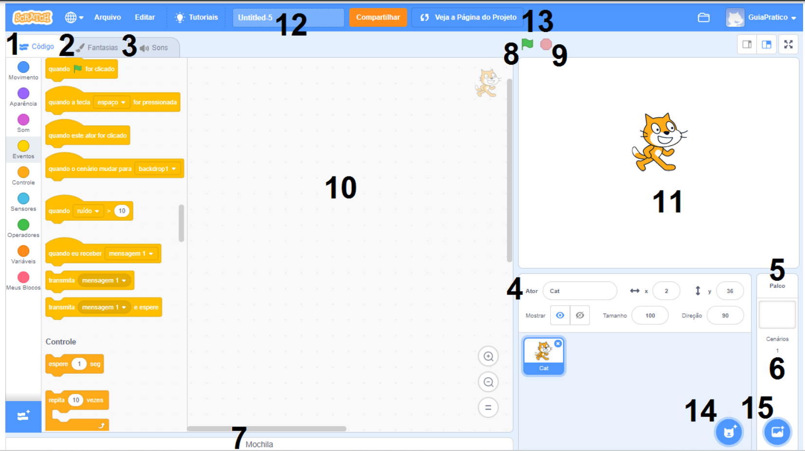

Sejam bem vindos a nossa primeira aula.
Para dar sequência primeiro você deve possuir uma conta no scratch
- Abra o site do Scratch em https://scratch.mit.edu/
- Clique na opção " Aderir ao Scratch " no canto superior direito
- Utilize usuario/senha fácil de lembrar e resgistre-se com seu Email do @escola
Terminando esses passos, vamos começar a entender um pouco sobre nossa plataforma SCRATCH
- 1. Aba Código : é onde estão organizados os blocos de programação, formados por nove categorias distintas, organizadas por cores;
- 2. Aba Fantasias : é a área onde podemos editar as imagens dos personagens e cenários utilizados no projeto, fazendo as alterações que nos interessarem;
- 3. Aba Sons : é o local destinado à edição dos sons utilizados no projeto, sejam eles associados aos personagens ou aos cenários;
- 4. Ator: é cada personagem ou objeto que utilizamos no projeto, que podem ser modificados na aba “Fantasias”;
- 5. Palco: é a área que aciona os cenários para que possamos editá-los na área de programação;
- 6. Cenários: são os planos de fundo que utilizamos no nosso projeto. Quando a edição de cenários está ativa a aba “Fantasias” muda de nome para “Cenários”;
- 7. Mochila: é a área do editor que comporta as três abas mencionadas e mais o espaço de programação;
- 8. Botão Ir : é onde se inicia a execução do projeto na Área de visualização, para que possamos testar se tudo está saindo de acordo com o que planejamos;
- 9. Botão Pare : é o botão que para a execução do projeto na Área de visualização;
- 10. Área de programação: é o espaço onde podemos adicionar, ver e editar os blocos de programação utilizados para cada personagem ou cenário;
- 11. Área de visualização: é a área que funciona como uma mini tela, onde podemos visualizar e testar a execução do projeto;
- 12. Nome do projeto: é o espaço reservado para colocarmos o nome do nosso projeto – por padrão ele vem com a denominação Untitled;
- 13.Botão Veja a Página do Projeto: é o botão que, quando clicado, alterna entre o modo de edição do projeto e o modo de compartilhamento, que mostra o projeto como os outros usuários irão vê-lo na plataforma;
- 14.Botão Selecione um ator : é o botão que mostra as opções que temos para escolher, criar ou adicionar personagens ao nosso projeto;
- 15.Botão Selecionar Cenário : é o botão que mostra as opções que temos para a escolher, criar ou adicionar cenários ao nosso projeto;
Caso tenham permanecido dúvidas assita o vídeo abaixo.
O que aprendimos hoje?
- Criamos nossa conta no Scratch
- Anotamos os principais conceitos
- Conhecemos o que cada elemento da página do Scratch é capaz de fazer